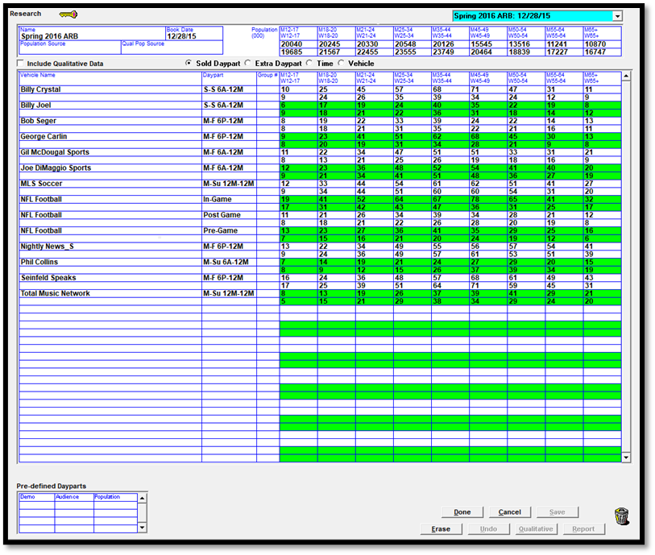
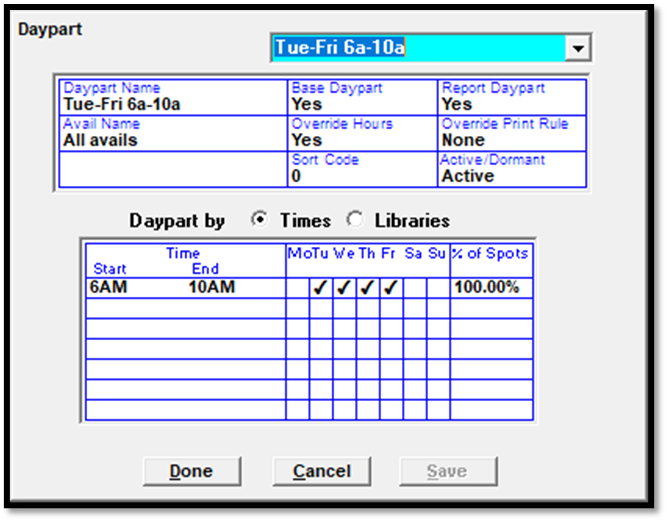

Research Screen
Research can be imported from a service such as Act1, from a CSV file, or manually entered. See the Traffic Imports help document for more information on how to run the Research import. (Note: sports vehicle research data can only be imported using the CSV, Radar, and Vehicle research import. If using Act1, the sports research must be entered manually on the Research screen. Act1 can only be used with conventional, selling, and rep vehicles.)
Version 7.0 research screen.

Version 7.1 research screen.
The version 7.1 research screen includes date and vehicle filter options that filter the available research books to only display those books that meet the filter criteria, reducing the number of research books shown in the research book dropdown in the upper right corner of the screen. When a filter has been used, press the Get Books button to refresh the list of research books using the selected filter (version 7.1 and above).
The version 8.1 and above Research screen includes fields for the Act 1 lineup codes and settings on the Sold Daypart, Extra Daypart, and Vehicle views (pictured below).
When using the Act 1 Special Traffic CSV file, the Act 1 lineup codes and settings can be imported along with the research data directly from Act 1. The codes and settings are viewable on the Research List screen, and the Research report, and will get included on the Proposal XML export and can be included on the Proposals/Contracts report when the “research” option is checked on.
Also on version 8.1 and above, when typing in the research book name field on the research book dropdown, the system will filter the list of available research books so that it only includes books that have the text you typed in somewhere in the book name, allowing you to find a particular book without knowing the precise name. For example, you could type in “Radar” and it will bring up all books that have the word “Radar” somewhere in the book name.
Research data can be viewed and edited on the Lists -> Research Screen. This section describes the different fields on the Research Screen.
- Name and Book Date: When importing or entering research, you must give the book a name and date.
- Population Source and Qual Pop Source: You can choose the book on which to base your Population and Qualitative Population.
- Population Source: A different research book can be referenced in the Population Source field to pull in the population from that research book.
- Important Note: The system does not recognize any population source reference other than the one defined in the book that the vehicle references, so if Book A has a population source that references Book B, and Book B has a population source that references Book C, and so on, if the default book for a vehicle is Book A, then the population will be pulled from Book B (and not from Book C or a different book).
- Qualitative Population Source: Qualitative research counts different types of people that are listening, such as people in certain age groups, races, or certain income groups, and so on without limit.
- Population: These fields represent the population of the U.S., separated into demo categories (M12-17, W12-17, M18-24, W18-24, and so on).
- For each quarter hour and each daypart, there are 18 different audience demographic values published, encompassing 9 age groups for both men and women. Adults 25-54, for example, can be calculated by adding up men 25-34, women 25-34, men 35-44, women 35-44, men 45-54, and women 45-54
Qualitative Research
The “include qualitative data” checkbox will include Qualitative, or socio-economic data. Only those networks that subscribe to Radar can import qualitative data.
If using Qualitative Research, you can enter your different socio-economic demographics by clicking the “Qualitative” button and defining each demo.
The name field can contain up to four alphanumeric characters, which will be combined with the Description field.
Pre-Defined Dayparts
Pre-defined daypart information is imported during the research import. It takes precedence over the basic demo category research when a demo category is used on a contract that matches the pre-defined daypart demo category and there's a matching line. For example, if A18-34 was used on a contract, and pre-defined daypart data existed for Vehicle A for a specific daypart that was being used on a contract line, it would use the audience and population data from the pre-defined daypart section for that line.
To see pre-defined daypart data on the Research screen, click a row of data in the main part of the screen and if pre-defined daypart data exists for it, it will be shown in the pre-defined daypart section.
Note that not all research companies provide Pre-Defined daypart information.
Types of Research Data
There are two ways to report research data: by Daypart or by Exact Time.
- Research by Daypart takes all of the possible times a program airs across its affiliates, and adds all of the audience for those times and stations. For example, if a program airs on Station A at 12p-3p M-F on one station and 3p-7p M-F on station B, research by Daypart would report the research for all of the audience between M-F 12p-7p on both stations (the daypart used encompasses the time range that the program airs across the different stations).
- Research by Exact Time takes the actual audience that is listening to a program when it is airing, for example, it will calculate the audience on station A between 12p-3p M-F only and add that to the audience on Station B between 3p-7p M-F. Exact Time data does not apply to a single daypart but to the vehicle as a whole.
The way you pull the information from Act1 or Radar will determine the method by which your research will be entered and viewed:
- Sold Daypart: When data by daypart is imported, the daypart is compared to the days and times for the vehicle’s dayparts as defined in the latest Rate Card. If they match exactly, then they are stored as Sold Dayparts.
- Extra Daypart: If the imported dayparts do not match, they are stored as Extra Dayparts.
- Time: When quarter hour data is imported, it is stored as Time data.
- Vehicle: When Exact Time data is imported, it is stored as Vehicle data, since it pertains to the vehicle as a whole, and refers to no particular daypart. Exact Time data will be indicated with the words “stored schedule” on the import file, under the vehicle code, where the daypart would be when using Daypart data. Note that a single import file can contain Daypart data and Exact Time data (in separate sections), or only one type of data (Daypart data or Exact Time data). The system will import the data accordingly, and in the case of Exact Time data, it will be split off into a separate book, using the Exact Time name that is entered on the Research import screen.
Selling to Airing Vehicles
Since Airing vehicles are not in rate card and do not appear on Proposals, but Selling vehicles do not actually air, research for Selling to Airing vehicles must be compiled for the Selling dayparts, and imported into their Selling vehicles.
Additional Daypart Information
On version 7.0 and earlier versions, only certain day spans, such as Monday through Friday, Monday through Saturday, Monday through Sunday, Saturday through Sunday, Friday through Sunday, and a few others, were accepted by the import and able to be matched up to dayparts on the Rate Card. On version 7.1 and above, it will allow any day span, as long as the days are consecutive, without gaps, such as Tuesday through Thursday, Wednesday through Saturday, Thursday through Sunday, and so on. (A day span such as Monday, Wednesday, and Thursday, will not be matched to a daypart because of the day gap between Monday and Wednesday.)
For example, here’s an example of the daypart line from an Act 1 import file (demo summary version), with the daypart of Tuesday through Friday 6a-10a specified:
,TuFr 6a-10a,,,Total,,
If the corresponding vehicle has a daypart with the days and times of Tuesday through Friday, 6a-10a, like the daypart picture below illustrates, the research will be imported for that vehicle and daypart.

If this vehicle and daypart is on the current rate card, the data will be imported into the “Sold Daypart” area.
Note that the start and end time and valid days defined for the daypart are what the import uses to match up the dayparts on the import file with the dayparts in the Traffic system. The daypart name defined in the Traffic system for the daypart is irrelevant to this matching process.